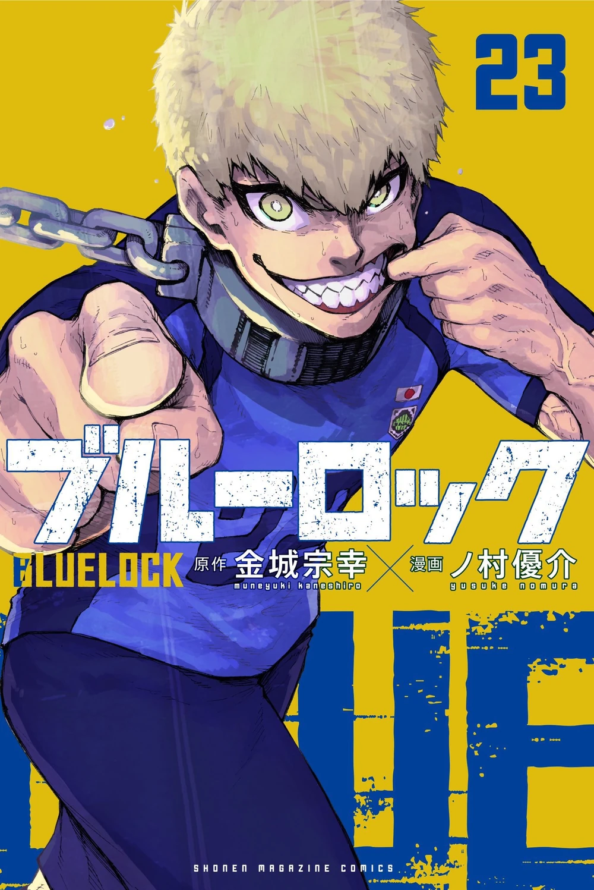
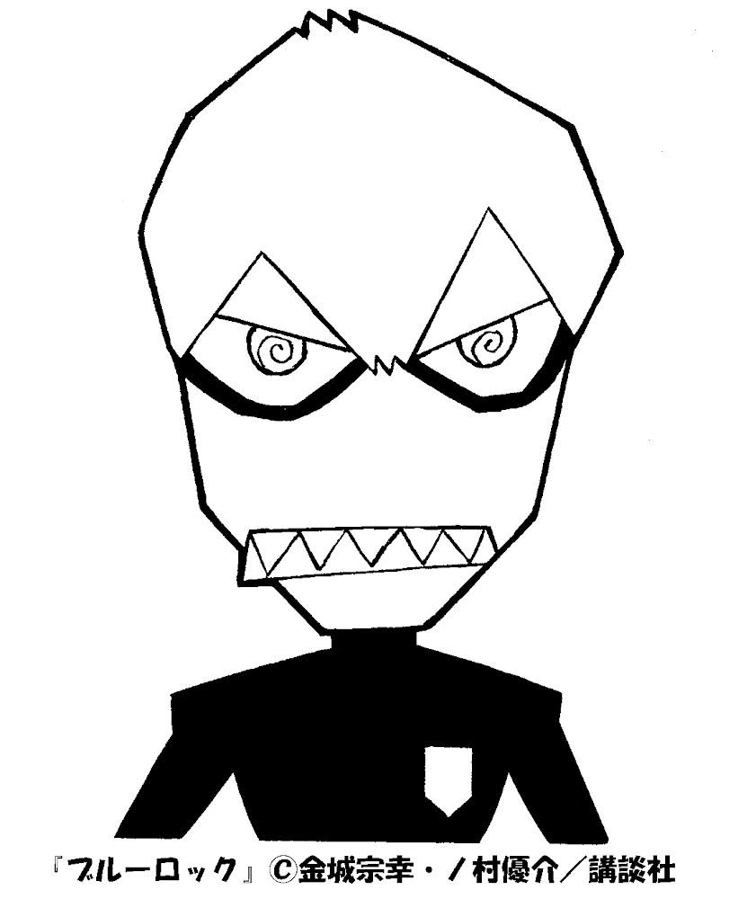
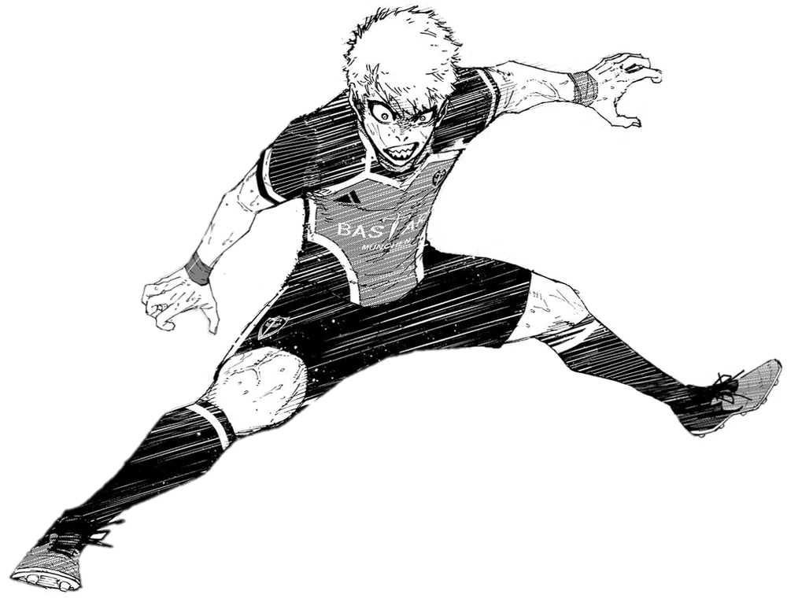
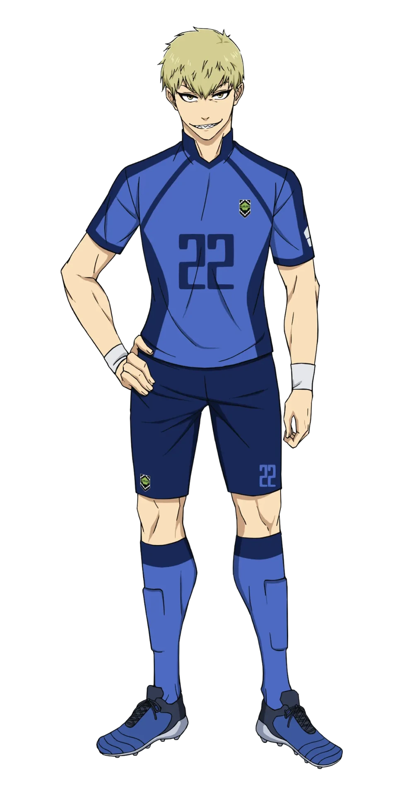

Japanese: 雷市 陣吾
Rōmaji: Raichi Jingo
Age: 17
Birthday: June 27
Height: 182cm / 5"11.5
Hair color: Blonde
Eye color: Yellow
Team: Bastard Munchen (Germany)
Jersey Numbers: 22 (Japan U-20) / 22 (Manshine City)
Position(s): Defensive MIdfielder / Central Midfielder
Raichi is a tall young man with a muscular build. His hair is usually seen as flat and is pale blonde, similar to that of Seishiro Nagi. His eyes in the colored pages of the Blue Lock manga are that of an amber color, and framing them are extremely dark, thick lashes.
Sharp shark-like teeth make Raichi's appearance seem intimidating, even more so when he scowls and shouts. But in the rare moments where his irritable and erratic nature isn't graphic, Raichi is overall an attractive young player.
Raichi is one of the most hotheaded players in Blue Lock, initially overly confident in his own skills. He does not like people giving orders, but after the amount of talent and the level of difficulty in Blue Lock humbled him multiple times, Raichi learns to succeed in his role the best he can so that he not only survives Blue Lock but grows along with everybody else. Raichi gets frustrated when players he initially underestimated develop faster than him and he likes to remind those who are below him of their place.
In the beginning of Blue Lock, he was highly argumentative and disagreeable. His tendency to belittle his teammates, as seen in the first few chapters, stems from an overwhelming confidence in his abilities, which can make him come across as arrogant and pompous. But as time went on, he learned to work with others and listen to what they had to say to succeed, calming down his arrogance in the process.
In the final game of First Selection, Raichi is willing to forgo the position of striker and uses his brash personality to inspire and fuel his team, implying that despite wanting to be a striker, Raichi is willing to change in order for his team and himself to win.
In the Neo-Egoist League, Raichi has mellowed out considerably and acts as the "heart" of the team, constantly being the player to aggressively bark callouts to the rest of his team, using his loud voice as a way to pump himself and his teammates up. And, despite retaining his overall disposition, Raichi has been shown to be much more lenient in listening to his teammates (namely Isagi) in order to fulfill a specific role to help the team win, and even apologizes if he doesn't manage to successfully fill that role. Of course, he still yells at his teammates angrily if they mess up on their end.